Выключатели и переключатели
Условные графические обозначения (УГО) большинства выключателей и переключателей построены на основе базовых символов замыкающего, размыкающего и переключающего контактов и их разновидностей. Размеры УГО контактов приведены здесь.
Выключатели
Выключатели используют для соединения и разъединения электрических цепей. У этих изделий два рабочих положения: «включено» и «выключено». Соединение и разъединение цепи (замыкание и размыкание) осуществляется подвижным контактом, который либо постоянно соединен с одним из неподвижных контактов, а с другим соединяется при установке ручки переключателя в положение «включено», либо выполнен в виде перемычки, соединяющей неподвижные контакты в этом же положении.
Однако независимо от конструкции коммутационного узла замыкающий контакт изображают на схемах одинаково — в виде наклонной линии в разрыве линии электрической связи (рис. 1, слева).
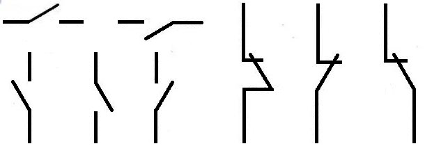
Рис. 1 - Выключатель и его условные обозначения на схемах.
В отличие от замыкающего контакта, который всегда показывают в разомкнутом положении, размыкающий контакт изображают в замкнутом положении. ГОСТ 2.755—74 устанавливает три равноправных символа такого контакта (рис. 1 справа), однако в пределах одной схемы рекомендуется пользоваться каким-либо одним из них. Направление движения подвижного контакта (как размыкающего, так и замыкающего) из начального положения в конечное стандарт не устанавливает.
Сложные выключатели, предназначенные для одновременной коммутации нескольких электрических цепей, могут содержать несколько замыкающих или размыкающих контактов или их комбинации.
При совмещенном изображении такого выключателя (т. е. в одном месте схемы) линии, обозначающие подвижные контакты, изображают параллельно одна другой и соединяют символом механической связи — двумя сплошными линиями. Символы двух таких выключателей приведены на рис. 2.
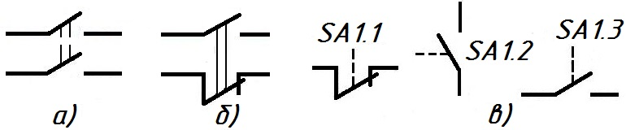
Рис. 2 - Сложные выключатели.
Первый из них (рис. 2,а) содержит два замыкающих контакта. Им можно включить (замкнуть) две электрические цепи, например оба провода сетевого питания прибора или по одному проводу в цепях питания сразу двух приборов. С помощью второго выключателя (рис. 2,б) можно, например, включить питание измерительного прибора и одновременно разомкнуть чувствительный стрелочный измеритель тока.
Если по каким-либо причинам контактные группы сложного выключателя приходится изображать в разных частях схемы, каждый из символов подвижных контактов снабжают отрезком штриховой линии механической связи, а принадлежность к одному изделию указывают в позиционном обозначении (рис. 2,в, контактные группы SA1.1, SA1.2 и SA1.3 принадлежат выключателю SA1).
Говоря о символах замыкающего и размыкающего контактов, имеется в виду, что их подвижные части могут быть зафиксированы как в замкнутом, так и в разомкнутом положениях. Однако есть выключатели, у которых в одном из этих положений контакты не фиксируются, т. е. после устранения действующей на них силы они возвращаются в исходное состояние. Если хотят показать, что контакт не фиксируется в замкнутом положении, на конце линии электрической связи, символизирующем неподвижный контакт, изображают небольшой треугольник, вершина которого как бы отталкивает символ подвижного контакта (рис. 3,а). Аналогично поступают и с символом размыкающего контакта, не фиксирующегося в разомкнутом положении (рис. 3,б).
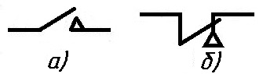
Рис. 3 - Контакты без фиксации
Среди выключателей есть и такие, у которых один подвижный контакт может одновременно замыкать или размыкать две электрические цепи (рис. 4).
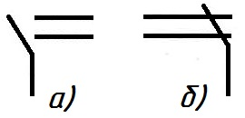
Рис. 4 - Сдвоенные выключатели:
а — контакт с двойным замыканием, б — с двойным размыканием
Стандарт ЕСКД предусматривает обозначение и таких особенностей выключателей, как неодновременность срабатывания контактов в группе, наличие фиксации в замкнутом или разомкнутом положении контактов выключателей, управляемых кнопками (имеется в виду, что в обычном исполнении такие коммутационные изделия не имеют фиксации), чувствительность к воздействию внешних факторов и т. д.
Отличительным признаком контакта, срабатывающего раньше остальных, является короткая черточка на конце символа подвижного контакта, направленная в сторону его движения при срабатывании. Обозначение срабатывающего с опережением замыкающего контакта показано на рис. 5,а, размыкающего — на рис. 5,б. Если же необходимо указать, что контакт, наоборот, срабатывает позже других в группе, черточку направляют в противоположную сторону (рис. 5,в, г).
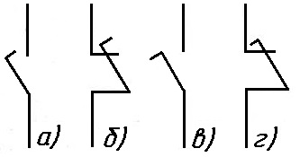
Рис. 5 - Обозначение срабатывающего с опережением замыкающего контакта.
Символы контактов без самовозврата после срабатывания используют в обозначениях кнопочных выключателей, поэтому, кроме знака отсутствия самовозврата (небольшой кружок на символе неподвижного контакта) в них вводят и символ ручного привода — кнопки.
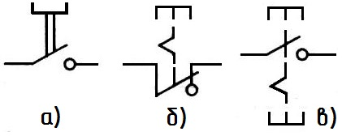
Рис. 6 - Обозначение кнопочных выключателей с возвратом
Для примера на рис. 6,а приведено условное обозначение кнопочного выключателя с возвратом в исходное положение путем вытягивания кнопки, на рис. 6,б — с возвратом посредством повторного нажатия на кнопку, а на рис. 6,в — с возвратом посредством отдельного привода, например нажатием специальной кнопки «Сброс».
Признаком контактов, автоматически возвращающихся в исходное положение при перегрузке цепи или превышении допустимых пределов изменения внешних факторов (например, температуры), является знак в виде небольшого прямоугольника на символе подвижного контакта.
Физическую величину, под действием которой контакт возвращается в исходное положение, обозначают общепринятым буквенным символом и математическим знаком «>» (больше) или «<» (меньше).
Так, если рядом с обозначением контакта помещена надпись «U>» (см. рис. 7,а), то это означает, что он реагирует на превышение напряжения сверх допустимого уровня, а этот же буквенный символ со знаком «<U» указывает на чувствительность контакта к уменьшению напряжения ниже установленного значения (рис. 7,б). Аналогично обозначают и свойство контакта срабатывать при превышении максимально допустимой температуры (рис. 7,в).
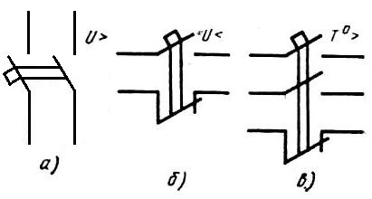
Рис. 7 - Обозначение контактов с реакцией на уровень.
Буквенный код изделий этой группы (как, впрочем, и переключателей) в позиционном обозначении определяется коммутируемой цепью и конструктивным исполнением выключателя (вернее, способом управления).
Если выключатель применен в цепи управления, сигнализации, измерения и т. д., его обозначают латинской буквой S, а если в цепи питания, — буквой Q. Способ управления находит отражение во второй букве кода: кнопочные выключатели и переключатели обозначают буквой В (SB), автоматические — буквой F (SF), все остальные — буквой A (SA).
Переключатели
Переключатели — это устройства, коммутирующие одну или несколько цепей на несколько других. Условное графическое обозначение переключающего контакта, по сути, состоит из комбинации символов замыкающего и размыкающего контактов (рис. 8), при этом также имеется в виду, что подвижный контакт фиксируется в обоих крайних положениях.
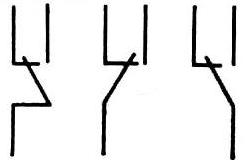
Рис. 8 - Переключатель и его общее обозначение на схемах
Символ подвижного контакта переключателя с фиксацией не только в крайних, но и в среднем (нейтральном) положении изображают между обозначениями неподвижных контактов (на одинаковом расстоянии от них) и выделяют жирной точкой (рис. 9,а).
Если необходимо показать контакт с фиксацией в нейтральном и одном из крайних положений или без фиксации в крайних положениях, один или оба символа неподвижных контактов снабжают треугольниками (рис. 9,б).
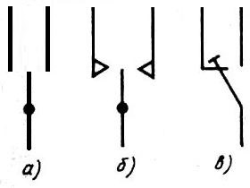
Рис. 9 - Переключатели с фиксацией, обозначение на схемах
В некоторых случаях применяют переключатели с безобрывным переключением. При переводе такого переключателя из одного положения в другое подвижный контакт не разрывает цепи, соответствующей предыдущему положению, до тех пор, пока не соединит новую цепь. Контакт с безобрывным переключением изображают с короткой черточкой на конце (рис. 9,в).
Другие особенности переключающих контактов (срабатывание с опережением или запаздыванием, отсутствие самовозврата и т. п.) указывают теми же знаками, что и у замыкающих и размыкающих контактов. Символы многоконтактных переключателей строят на базе соответствующих переключающих контактов, соединяя их линиями механической связи (рис. 10).
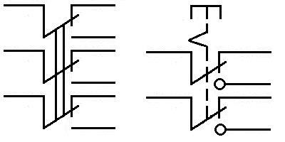
Рис. 10 - Обозначения многоконтактных переключателей на схемах.
В практике можно встретить переключатели (например, кулачковые), одни и те же контакты которых многократно замыкаются и размыкаются в зависимости от положения ручки управления.
Изобразить такой коммутационный узел, пользуясь базовыми символами замыкающего, размыкающего и переключающего контактов, очень трудно, поэтому в подобных случаях ГОСТ 2.755—74 рекомендует иные способы построения обозначений переключателей.
На рис. 13 изображен переключатель на пять положений (они обозначены цифрами 1—5; буквы а—д введены только для пояснения описания его работы). В этом переключателе соединение цепей а—д между собой показывают отрезки перпендикулярных им линий с жирными точками на концах (символы электрического соединения).
В положении 1 (линии-соединители напротив цепей а, б и г, д) переключатель соединяет цепи а и б, г и д, в положении 2 — цепи б и г, в положении 3 — а и в, г и д, в положении 4 — а и д, в положении 5 — а и б, в и д.
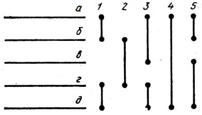
Рис. 13 - Переключатель на пять положений.
Иной принцип действия у переключателя, обозначение которого приведено на рис. 14. Он также на пять положений, но соединяет цепи а—а, б—б и т. д. (по сути, это переключатель на основе замыкающих контактов, которые при более простой коммутации можно было бы изобразить в разрывах цепей).
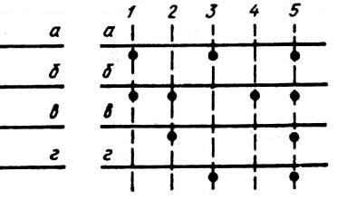
Рис. 14 - Переключатель на пять положений с иным принципом.
В его первом положении замыкаются цепи а—а и б—б (об этом говорят изображенные под ними жирные точки, символизирующие электрическое соединение), во втором — цепи в—в и б—б, в третьем — а—а и г—г, в четвертом — б—б, в пятом — все четыре цепи.
По типу движения управления рукояткой переключатели делятся на:
- угловые.
- нажимные.
- поворотные.
Кнопочные переключатели
Кнопочные переключатели относятся к переключателям нажимного типа.
По принципу действия кнопочные переключатели различают трех видов:
- с самовозвратом, т.е. без фиксации кнопки в положении "Включено" и возвращение кнопки в исходное положение после окончания нажатия;
- с независимой фиксацией, когда кнопка фиксируется в положении "Включено" , а возвращается в исходное положение при повторном нажатии;
- с зависимой фиксацией, когда кнопка из фиксированного положения "Включено" возвращается в исходное положение каким то другим приводом, например при нажатии одной из соседних кнопок.
Переключатель П2К (рис. 5) двухсекционный, и каждая секция может работать как самостоятельный двухпозиционный переключатель. Выводами контактов секций служат отрезки посеребренной проволоки, впрессованные двумя рядами в пластмассовый корпус. При нажатии на кнопку ее шток подвижными контактами замыкает средние контакты секций с одним из крайних контактов. Шток возвращает в исходное положение спиральная пружина.

Переключатели П2К выпускаются
- с независимой фиксацией,
- с зависимой фиксацией,
- с самовозвратом.
Переключатели П2К могут быть многосекционными до восьми групп контактов в одном корпусе. Кроме одиночных, промышленность выпускает переключатели П2К, смонтированными в виде блоков на металлической арматуре. Такие блоки можно увидеть в магнитофонах, приемниках для переключения диапазонов.
Устройство переключателя КМ1 (рис. 4) аналогично конструкции тумблера МТ1, но у него переключение контактов осуществляется нажатием на кнопку.
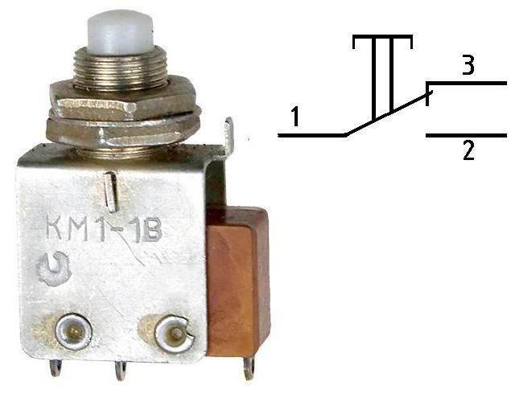
Рис. 12 - Внешний вид и схема кнопочного переключателя КМ1
Кнопочные переключатели типа КМ могут быть как с самовозвратом, так и с независимой фиксацией.
Тумблеры
Для коммутации (переключения) одной из двух цепей широко используют угловые переключатели — тумблеры.
В тумблере типа МТ1 (рис. 15) три контакта: переключающийся 1 и неподвижные 2 и 3. В одном из положений ручки тумблера замкнуты контакты 1 и 2, при другом контакты 1 и 3. С помощью такого тумблера в колебательный контур можно включать разные катушки и таким образом переключать контур на прием радиостанций двух диапазонов, например длинноволнового и средневолнового. При использовании тумблера в качестве выключателя питания контакт 2 или 3 остается бездействующим.
Тумблер ТВ2-1 (рис. 16) состоит из двух пар контактов 1, 2 и 3, 4. В одном из положений ручки замкнуты контакты 1 и 2, а контакты 3 и 4 разомкнуты. При переводе ручки в другое положение замкнутые контакты 1 и 2 размыкаются, а разомкнутые контакты 3 и 4 замыкаются. Если контакты 1 и 3 соединить вместе, то такой тумблер может выполнять такие же функции, что и тумблер МТ1.
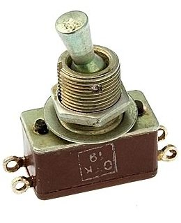
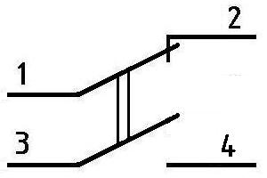
Рис. 16 - Внешний вид и схема тумблера ТВ2-1
Тумблер ТП1-2 (рис. 17) состоит, по существу, из двух переключателей, подобных тумблеру МТ1, подвижные контакты 3 и 4 которых механически связаны между собой. При размыкании контактов 3 и 1, 4 и 2 одновременно замыкаются контакты 3 и 5 и контакты 4 и 6. Таким тумблером можно одновременно коммутировать две цепи, например замыкать или разрывать оба провода источника питания или переключать катушки двух колебательных контуров.
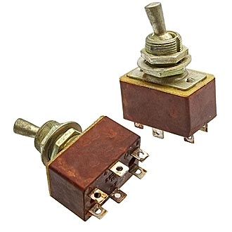
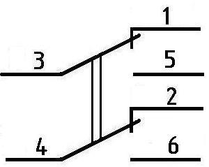
Рис. 17 - Внешний вид и схема тумблера ТП1-2
Галетный переключатель
Для коммутации колебательных контуров, например приемника супергетеродинного типа, или элементов измерительных приборов может понадобиться галетный переключатель (рис. 18). Переключатель такого типа состоит из плат (галет), на каждой из которых смонтировано контакты переключателей и фиксирующего механизма.
Галетные переключатели характеризуют числом положений и направлений (под последним понимают число независимых коммутируемых цепей, обычно равное числу подвижных контактов).
Каждая галета, в свою очередь, состоит из двух частей: неподвижной (статора), закрепленной на основании фиксирующего механизма, и подвижной (ротора).
На статоре закреплены 12 пружинящих неподвижных контактов, часть из которых (от одного до четырех) длиннее остальных, а на роторе — в зависимости от числа положений — от одного до четырех контактов в форме кольца или секторов с выступами.
Удлиненные контакты статора постоянно соединены с подвижными контактами ротора, остальные соединяются с ними при переводе ротора из одного положения в другое. В зависимости от числа галет и подвижных контактов переключатель может иметь разное число положений и направлений.
На схемах переключатели такого типа изображают, как показано из рис. 19,а. Здесь символ в виде длинной линии с изломом на левом конце обозначает вывод подвижного контакта, перечеркивающая ее короткая линия — сам подвижный контакт, а расположенные напротив нее концы линий электрической связи — неподвижные контакты, число которых равно числу положений переключателя.
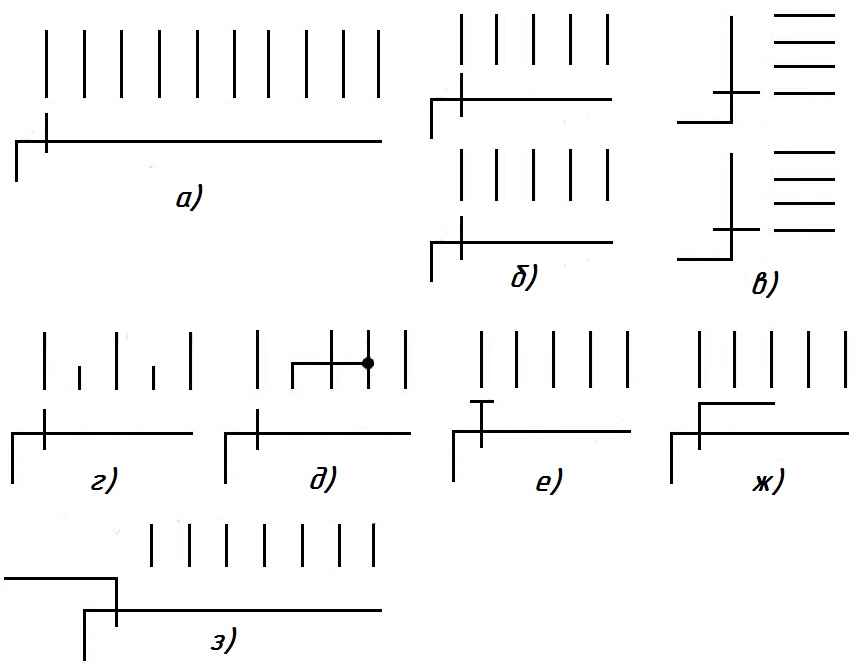
Рис. 19 - Галетные переключатели с разным числом положений и направлений
Если переключатель на несколько направлений, число таких контактных групп соответственно увеличивают, изображая их одну под другой (рис. 19,б) или рядом (рис. 19,в).
При расположении символов контактных групп в разных участках схемы их принадлежность к одному коммутационному устройству, как и в ранее рассмотренных случаях, указывают соответствующей нумерацией в позиционных обозначениях (например, SA1.1, SA1.2 и т. д.).
В положениях, в которых подвижный контакт не должен соединяться ни с какой цепью, символ соответствующего неподвижного контакта укорачивают (рис. 19,г). Точно так же поступают и в том случае, если несколько неподвижных контактов соединены вместе. Подвижный контакт с безобрывным переключением цепей выделяют короткой черточкой (рис. 19,е).
Встречаются пёреключатели, у которых подвижный контакт соединяется сразу с несколькими неподвижными контактами. Эту особенность коммутации показывают линией на конце символа подвижного контакта, «охватывающей» соответствующее число символов неподвижных контактов.
Для примера на рис. 19,ж изображен переключатель, у которого одновременно замыкаются три соседние цепи в каждом положении. Если же подобный переключатель в каждом последующем положении подключает параллельную цепь к цепям, замкнутым в предыдущем положении, символ подвижного контакта видоизменяют, как показано на рис. 19,з.
Среди галетных переключателей есть такие, у которых подвижные контакты представляют собой тонкие валики, соединяющие концами пары неподвижных контактов каждый в своей группе (переключатели независимых цепей).
Эту особенность конструкции наглядно отражает и условное обозначение такого переключателя, где символ подвижного контакта — короткая черточка — изображен между символами неподвижных контактов (рис. 20).
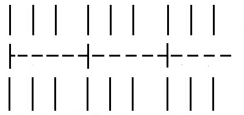
Рис. 20 - Переключатель независимых цепей
Движковый переключатель
Определенный интерес представляет движковый переключатель 2П6Н (на два положения, шесть направлений). Такие переключатели выполняют роль переключателей диапазонов. Переключатель состоит из пластмассовой колодки с 18 пружинными контактами, расположенными в два ряда, и движка с шестью ножевыми контактами по три контакта с каждой стороны движка. При одном (по рис. 141 крайнем левом) положении движка ножевые контакты замыкают пружинные контакты 1 и 3, 2 и 4, 7 и 9, 8 и 10, 13 и 15, 14 и 16, а при другом (по рис. 21 крайнем правом) положении контакты 3 и 5, 4 и 6, 9 и 11, 10 и 12, 15 и 17, 16 и 18. Таким образцом, каждые три рядом стоящих контакта (например, контакты 1, 3 и 5) и относящийся к ним ножевой контакт образуют самостоятельный переключатель, которым можно коммутировать две цепи. Всего в конструкции шесть таких переключателей по три с каждой стороны от движка. Перемещение движка из одного положения в другое ограничивают проволочные скобы.
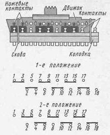
Рис. 21 - Движковый переключатель и схемы замыкания его контактов
Чем, с технической точки зрения, интересен, этот переключатель? Тем, что его легко переделать в переключатель на три четыре положения. Дело в том, что его ножевые контакты, удерживающиеся петлевидными лепестками в отверстиях в движке, можно переставлять, удалять ненужные контакты. Чтобы сделать это, надо снять проволочные скобы, извлечь движок из паза в колодке, удалить или переставить ножевые контакты в положения, соответствующие схемам переключателей конструируемого радиотехнического устройства, и обратно вставить движок в паз колодки. При переделке переключателя на три четыре положения роль ограничителя перемещения движка выполняет отверстие в панели, к которой переключатель крепят на стойках, направляющее движение ручки.
Источники:
Литература: В.В. Фролов, Язык радиосхем, Москва, 1998.